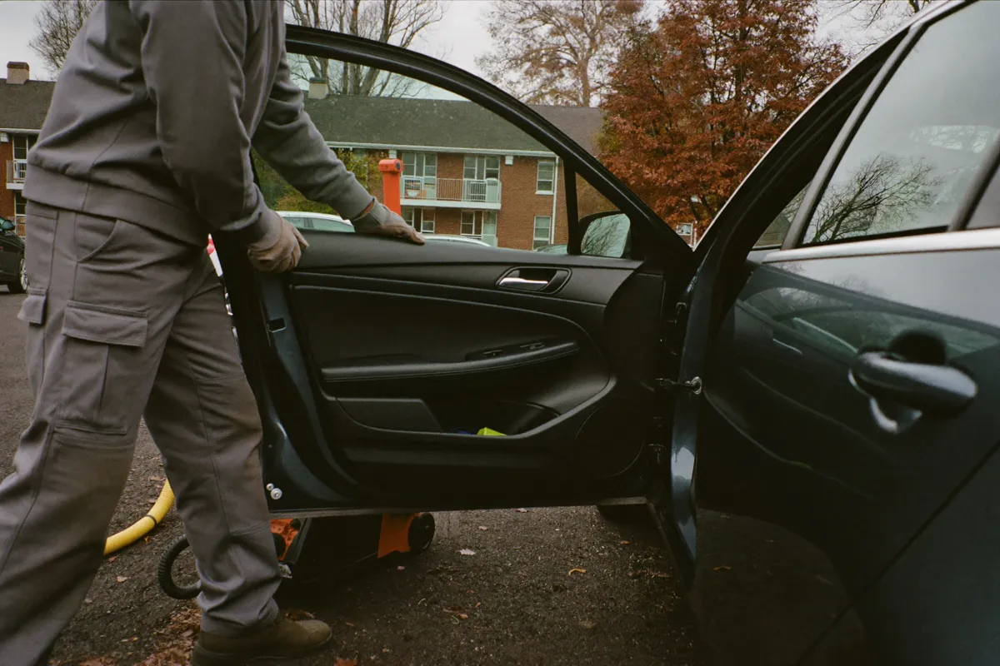
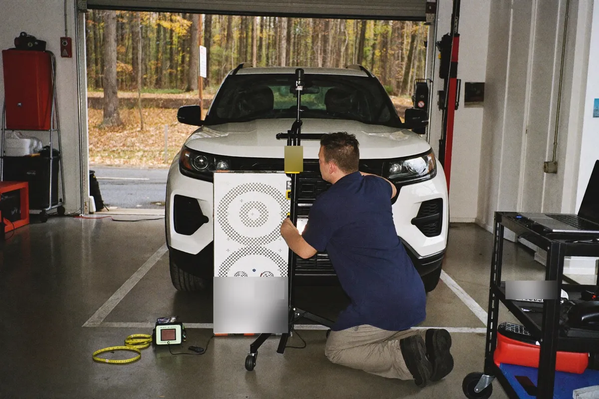

Knoxville Auto Glass Repair handles five kinds of glass work, all done where your car is parked. Find yours below. Most callers start with “Is this a repair or a whole new windshield?” and that is a fine place to start.
Windshield replacement in Knoxville is the fix for a crack longer than about six inches, a break at the edge of the glass, or damage in the driver’s view. It suits anyone whose windshield can no longer be safely repaired.
Left alone, a long crack keeps running with every freeze, pothole and blast of the defroster. It also scatters the glare from low winter sun, which makes the morning drive east on Kingston Pike harder than it needs to be.
Call us today for windshield replacement in Knoxville. Read more about windshield replacement.

Windshield chip repair in Knoxville fills a fresh rock chip with clear resin so it stops spreading and gets much harder to see. It works for chips smaller than a quarter that sit away from the edges.
Ignored, a chip collects dirt and water. Water that freezes inside the break pushes it open, and one cold morning with the defroster on high can turn it into a crack that needs a whole new windshield.
Call us today for windshield chip repair in Knoxville. Read more about windshield chip repair.

Car window replacement in Knoxville covers door glass, small quarter windows and rear windshields broken by a break-in, an accident or a failed window regulator. Side glass is tempered, so it shatters into small pieces that have to be vacuumed out of the door and the cabin.
Until it is replaced, a broken window lets in rain and cold and leaves the car easy to get into. Plastic and tape rarely hold up on the interstate.
Call us today for car window replacement in Knoxville. Read more about car window replacement.

Storm damage auto glass service in Knoxville handles windshields, side windows and back glass broken by falling limbs, hail or debris thrown by high wind. East Tennessee gets ice storms in winter and hail with spring thunderstorms, and both break a lot of glass.
After a storm, an open window lets rain soak the seats and carpet within hours, and mildew follows. A cracked windshield can also give way if the car is hit again.
Call us today for storm damage auto glass in Knoxville. Read more about storm damage auto glass.

ADAS camera calibration in Knoxville re-aims the forward camera behind the rearview mirror after a windshield is replaced. Most newer vehicles with lane-keep assist, automatic emergency braking or adaptive cruise control need it.
Skipped, the camera can read the lane a few degrees off. Warning lights may come on, or the safety systems may brake or steer at the wrong moment.
Call us today for ADAS camera calibration in Knoxville. Read more about ADAS camera calibration.

Call and describe the damage. We will tell you whether it is a repair or a replacement and give you a free quote.
Call (865) 910-8376 Now